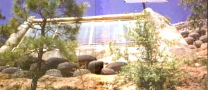

Mass Appeal
Build beautiful, energy-efficient houses out of tires and aluminum cans for $20 per square foot!
By Tim Knipe
October/November 1991
Gray towers of rain march across the mesa. Yellow pitchforks of lightning strike the earth amid the distant drone of successive thunderclaps. Black clouds swirl across the blue sky, eclipsing the sunlight and casting ominous shadows over the few dwellings that dot the land. It is precisely these dwellings that have brought architect Michael Reynolds and myself to these 20 acres outside Taos, N.M., on this darkening afternoon.
Reynolds had recently achieved some notoriety as the man who designed a seemingly bizarre house out of used tires for actor Dennis Weaver. Unfortunately, most news accounts seem to spend more time on Weaver than on explaining the theory behind the design. Much more than an actor's folly, Weaver's house is the product of a long search by Reynolds for an economical, self-sufficient form of house construction that would also reduce the stress placed on the planet by conventional building methods. In addition, the houses themselves would encourage a life-style more in harmony with the natural order.
As the swollen thunderheads above prepare to loose their cargoes of rain, Reynolds expresses outrage that the homeless problem currently facing nearly every nation around the world today is completely unnecessary. He contends that the high cost of housing is the result of refusing to look at alternatives and to set affordability and self-sufficiency as goals. "What other species on the planet could be in this predicament'?" Reynolds asks. "The mud wasps can all make mud nests; beavers can all cut wood. People, on the other hand, are mostly helpless when it comes to building their own homes. Housing has been taken away from people."
For the past 20 years, through much trial and error, Reynolds has been developing a building system which will, in effect, free people From the tyranny of costly mortgages, energy bills and even part of their grocery bills. He personally "test piloted" each experimental structure along the way to ascertain how successful it was. The result is a house design that satisfies his own rigorous criteria. In fact, these are much more than the word "house" implies. Reynolds calls his structures "Earth ships"-vessels rooted in the earth, designed to carry people through whatever the future brings: climate change, economic adversity or famine, as well as peace and prosperity. Built primarily from recycled materials (used tires and aluminum cans) and finished with adobe mud, they can be constructed by unskilled builders and inhabited with little, if any, dependence on the power grid: Heating and cooling are based on a principle called "mass." Power is gleaned from the sun or wind. It sounds outrageous but it seems to work.
In the Beginning
Reynolds is accustomed to the skeptical eye. After making up his mind that his life would be better spent seeking appropriate shelter for people rather than racing his motorcycles, he bought acreage that no one else wanted outside Taos, New Mexico, for only $350 an acre. This lack of interest was based on an alleged lack of water, an allegation Reynolds put to rest soon after the deed was signed. He found water all over the place.
How? "Hired a water witch," says Reynolds with a shrug, referring to a local dowser.
From the beginning, Reynolds felt that the key to his search lay in combining an accessible building material with natural energy sources such as sun and wind. In the early '70s, when Charles Kuralt began broadcasting footage of streets and fields all across America littered with beverage cans, it occurred to Reynolds that this abundantly available resource could be used as a building material.
He began by baling cans with wire into small blocks. The design was patented but never really utilized because it was too labor intensive. Instead, he began laying cans directly into cement mortar, using them as bricks themselves. At first, the cans-in-mortar construction was used to fill in between posts in more traditional post-and-beam construction. This evolved into using cans alone in dome-style construction. Exterior walls consist of two rows of cans separated by an air space filled with insulation, then mudded over.
Building the Perfect Battery: Your House
The trick is to capture energy. Since matter is essentially stored energy, it can be defined as a battery. The denser the matter-mass, the more stored energy is present. Iron is denser than tin, hence the skillet stays hotter longer than the tin pan. Air has no mass, therefore no ability to retain temperature. Conventional houses have very little mass and, therefore, must be insulated to retain temperature. In a Reynolds house, or Earthship, the walls themselves, because of their extremely concentrated mass, retain temperature. More than keeping cool or warm air in the walls becomes, according to Reynolds, the primary cooling or heating source. The secondary source is the sun, or in extremely dark environments, gas heat.
Mass is subtle, in Reynolds's estimation. "Sun comes and goes, like right now we have no sun," he points out as we drive across the rainswept mesa. "At night we ve got no sun. But mass never leaves. Mass is always there. If you can have a blast of water for five minutes, that's great, but if you can have a drip for five years, that's better. Mass is that way. I'm more impressed with mass than I am with the sun. Once you achieve mass, it never goes away.
Reynolds explains that if the base of the Earthship is below the frost line, the depth to which the ground freezes, the temperature of the mass walls will stay at 59 or 60 degrees Fahrenheit, which is the ambient temperature of the earth below that point. "Just as in a cave, the temperature will never go lower or higher unless you make it lower or higher. So without any input whatsoever, you're going to be able to remain at 59 or 60 degrees Fahrenheit. And that's livable," he adds with a smile, "no matter what happens."
Earthship houses are oriented toward the south and in some cases slightly to the east where maximum exposure to the sun is important. The southern wall is slanted and constructed entirely of framed glass. Ideally, the southern wall should contain the only glass in the structure as well as the only entrance, to maximize the mass of the three other sides. In Taos, at an elevation of 7,000 feet, winter temperatures reach minus 30 degrees, and summer temperatures can top out in the 100s; the walls of these houses maintain a mean temperature of 65 to 75 degrees without additional cooling or heating sources.
Achieving Mass
In developing the Earthship design, Reynolds kept his eye on two key factors: cost and sustainability. To be truly sustainable for the long term, he felt that structures must "join with the earth, not resist it." Thus, in addition to the mass of the structure's walls, the natural elements of the earth itself are included. Earthships are partially submerged in the ground, with the excavated soil piled nearly to the roof on the northern face.
All of the exterior walls, except for the glass one, have as their main component steel-belted radial tires filled with dirt: extremely economical and extremely dense. In addition to being ideal for achieving mass, tires are tremendously abundant-to the point that their disposal has become a major environmental problem. According to the Environmental Protection Agency, approximately 240 million tires are discarded in the United States every year. Finding a place to put them is a difficult task. Most landfill operators will not take them because they have a macabre tendency to rise to the surface once the dump is covered over, similar to the protagonists of the classic film Night of the LivingDead. An environmental version could be The Tires That Wouldn't Die.
As a result, tire dealers pay haulers anywhere from 25-to-50 cents a tire to remove them to a stockpile area where they are stacked for an indefinite period of time. An alternative is to shred, which cures their inclination toward resurrection but is also costly. It is no surprise then that most tire dealers welcome any suggestion that would rid them of the used tires in an economical way. If people want to build houses with them, that's just fine.
In Reynolds's houses, the tires are layered in staggered courses similar to bricks. Each tire is put into place empty and then filled with dirt from the excavation. The loose dirt is pounded into the tire rim and more dirt successively is added until the tire is rock solid and all but immovable. The fact that tires come in different sizes adds to their appeal as a building material. The base of the wall is laid with No. 16s, the body with No. 15s, tapering off at the top with No. 14s. Each wall averages about three feet thick, with a finish coat of plaster or adobe.
The unusual thickness of the walls allows for a wide distribution of the weight actually reaching the ground. This qualifies them as structural bearing walls, and their width eliminates the need for additional footings or foundations. In fact, to prove how much weight these tire walls are capable of supporting, Reynolds drove a filled cement mixer on top of one wall. The exposed tires did not even compress under the weight.
Of course, before beginning construction in any new location, local building codes must be satisfied. Reynolds has had engineers examine the walls and testify that they meet and even surpass any existing codes. One engineer claimed that the tire-construction system would be suitable for a dam.
Getting to Know U
To make the most of the mass, the tire walls are layered in U-shapes or modules. Each Earthship is comprised of a series of these U-modules placed side by side, stepped back and above the other, or in a combined layout. The stepped-back approach is most suitable when building up a mountain or on a large hillside.
The most common is the side-by-side configuration. In each case, the object is to make every room a battery. The open end of the U faces south, which allows the sun to warm the interior. Access between rooms is best arranged through a common hallway along the south wall. This maintains the integrity of the mass walls of the U-modules. Any mass that is removed by adding a doorway or window diminishes the efficiency of the battery effect.
While a U can be as small as the builder wants, there are restrictions on how large it can be. The maximum span between the legs of the U should not exceed 18 feet. A larger span would require roof beams that would be too large to be manageable. A U should also not be deeper than 26 feet to efficiently utilize the mass of the walls. If the total area exceeds 18-by-26 feet, there will not be enough mass to heat the resulting volume of air.
Farming in the Living Room
One important aspect of sustainability is access to a steady, predictable supply of unpolluted food. The best way to accomplish this is to grow your own.
"I see food as being as big an issue as architecture, energy, money, and recycling," says Reynolds. To enable people to become less susceptible to threats from chemicals, pesticides, and food additives, Reynolds has incorporated a greenhouse into his Earthship design.
Even before he filled his first tire with dirt, Reynolds was experimenting with the greenhouse concept. Many of the test houses on his initial 20 acres of mesa land contain greenhouses. One of them, which bears a strong resemblance to a lunar landing module, includes a two-story greenhouse with a thriving banana tree. In addition, he is experimenting with citrus, nut and avocado trees, as well as a host of different vegetables and herbs.
He has even considered agriculture in designing Earthship plumbing. Sewage is divided at the source into gray water and black water. Only black water, which comes from the toilet, is routed to a septic tank in the ground. The gray water-all sink, tub, and laundry water-is routed into holding tanks for use in greenhouse irrigation. The food particles that drain from the kitchen sink are particularly nutritious for the plants.
Getting off the Power Grid
Another aspect of sustainability is eliminating dependence on the community power grid supplied by the local utility company. To accomplish this, Earthships rely on renewable sources of energy, such as solar and wind. The houses in Taos obtain their power primarily through solar panels mounted on the roof. Aside from the fact that during a power blackout their lights will still be twinkling and their ice cream will remain frozen, Earthship dwellers need never pay another utility bill. This fact speaks directly to more-humane economics regarding housing.
Also, by not relying on the power grid, people are able to buy land that would not appeal to most developers, because running utilities to it would be too expensive. Therefore, the cost of the land can be very low. Earthships, in their currently evolved form, can be built for as little as $20 per square foot, as compared with $50 to $75 dollars a square foot for traditional woodframe construction.
In effect, Earthship residents can live well on a very limited income, a feeling Reynolds describes in terms more appropriate to intoxication. One couple began work on a tire house with a total investment of $15,000. They had intended to build two houses. When one was finished, they became so enthralled by living without expenses that work slowed to a crawl on the second. Instead, they went skiing, hiking and camping, enjoying freedom as if it were a new toy.
In Reynolds's mind, this is the type of freedom that was intended when the country was founded. He believes that since the signing of the Declaration of Independence, a different kind of oppression has evolved, one orchestrated through economics. The banks run most people's lives. Even the wealthy are paying great sums regularly to lending institutions, to utility companies, to grocery stores and restaurants. It is a self-perpetuating lifestyle that requires a constant flow of money to maintain, no matter what the level on the economic scale. And this style of living trickles down to those who can no longer afford the stakes of the game: the homeless people who walk the streets of every urban area in growing numbers.
Reynolds is proving that this does not have to be the case. People can live for very little money, in real economic freedom. "You can preach and argue in Congress until you're dead, and you won't change much of anything. Building Earthships doesn't involve any of that," Reynolds explains. "In spite of the law, in spite of politics and in spite of the economy, people will be free. And it's a quiet thing. I don't have to argue or make people angry. This is just a quiet thing that's happening."
One person it's happened to is Bob Allison, builder of five Earthships and owner of The Allison Company, a luxury custom- home builder in Ridgway, Colorado. "I was the biggest skeptic you can imagine when I first heard about tire houses, and now I'm their best salesman." Though an Earthship convert, Allison still has the same reaction every time he sees one. "Even now, when I see one of these things going up in the beginning, I think it's all crazy," Allison says. "But when you see the finished product, you think it's great. It's a revolution in building."
Earthship owner Pat Habicht is equally enthusiastic, so much so that she built two Earthships. "This is the nicest and most interesting house I have ever lived in. I was disgusted with all the other architects I consulted when I decided in April of 1989 to build a solar house. Michael was the only one who understood." It took Habicht, 58, six months to build her 1,400-square-foot home, working eight-hour days. Even after all the work, Habicht insists it's the way to go. "I love it. Not only do we recycle material for building, but the solar aspect saves trees from being cut for heating." Last winter, Habicht burned only one cord of wood between her two homes. Even as temperatures outside dipped to less than 30 degrees, her Earthship stayed comfortable.
Maintenance is easy, too. Habicht reports that her only upkeep is oiling the wood on the exterior facade to protect it from the dry New Mexico weather. Her monthly expenses are only $20 for electric (one of her homes is on the power grid; the other runs on a photovoltaic system that cost Pat $5,000 to install) and $10 for gas.
Despite these ringing endorsements from builders and Earthship owners and his own increasing celebrity, Reynolds does encounter skeptics from time to time. "There are people whose life-style it doesn't fit," says Reynolds. Even those in his profession were critical. "In the early days, other architects said I was piling junk, not building a house. But they're coming around."
REACH Out
Now that Reynolds has convinced himself and others that the Earthship concept works, he has gone on to a larger scale-an Earthship community. Rural Earthship Alternative Community Habitat (REACH) is currently being initiated on a mountainside eight miles from Taos. Reynolds has purchased 55 acres and begun implementing a program whereby people can own their own lot for a minimum investment of $1,000. The basic deed restriction is that only Earthships may be built there.
The community will be totally self-sustaining and the people who build the community will live in the community. Reynolds is particular about who will be involved. People have already offered big money for a piece of the land to develop themselves. Reynolds is not interested.
"We don't need money," he says. "Money is not the point. REACH is for the people. The people build it themselves out of what society discards, proving that money is irrelevant. What I am trying to do here is educate people about this concept, show them firsthand that it can be done and how to do it and then let them go out into the world and start these communities themselves, all over the world. There is no place that REACH can't work."
At the core of all Reynolds's efforts is a paradigm, which he sets forth as we leave the mesa, amid continuing atmospheric pyrotechnics, and head toward his own Earthship and a warm dinner. "Look at the trees. They sit there and they don't have to move. They take their water from the ground. They take their energy from the sky. Their foliage drops down and enhances the soil for their babies to grow in. Without even moving, they have their whole system worked out.
"What we're trying to do with these Earthships," concludes Reynolds, "is make a way for human life to live as intelligently as plant and animal life."
Sitting around the dinner table later that night, watching the rain course down the Earthship's sloped glass walls, it is difficult not to feel that the route to preserving this planet may actually lie in something as simple as building houses out of used tires. History will certainly attest to the human predisposition for accepting complex answers only to find the true solutions in elegant simplicity. Take the wheel, for example.
Elements of Earthships
Earthships, like the one shown here, are the result of 20 years of experimental work to develop a thermal mass house built with recycled materials. These structures have been analyzed favorably by various engineers and gas building authorities and have met and exceeded uniform building codes. They have also been financed by conventional lending institutions. Many have been built by the owners themselves with laborers who have little or no construction experience. (Other Earthships have been built by professional construction companies and the rest by Michael Reynolds himself). Though most have been built in the West, Earthships can be built anywhere.
"Earthships," like a seafaring ship, are meant to be self-contained, independent, and carry the inhabitant to a better future. They consistently cost about 25 percent less than equivalent designs built of conventional materials. Involvement by the owner can further reduce the $25 per square foot base cost (the 1,600-square-foothouse diagramed here cost $20 per square foot). When properly executed, Earthships require no backup heating or cooling due to their ability to tap into the constant temperature of the earth itself and store additional energy from the sun in winter. They can be built in almost any climate since, even without adequate sunlight, the thermal mass helps to alleviate the strain on external conventional energy sources. Most Earthships are designed to grow food inside, and some maintain their own solar electrical systems; thus, Earthships can go where utility lines do not.
The basic structure of Earthships consists of bearing walls made by pounding earth into used automobile tires. This resuits in what has been called a "rubber-encased adobe brick." The details are very similar to adobe construction, with tires laid in staggered coursings like bricks. Every room is based on a module (a "U") of three three-foot-thick temperature-storing bearing walls that act like a battery-storing up excess energy and discharging it when needed. The fourth "wall" faces south and is open to the energy of the sm. This basic structure takes no skill to execute, and when operated by the owner is virtually cost-free. A 1,500-square-foot Earthship uses anywhere from 500 to 700 tires, which can be "pounded out" by two people in less than a month (25 to 40 tires can be pounded by two people per eighthour day depending on the conditions present as well as the endurance and strength of the builders).
The roof is made of beams, spanning from bond beams on the top of each wall. The beams are decked, well-insulated, and roofed with earth bermed up over the rear of the structure so that the Earthship is effectively buried on three sides. This method makes the Earthship ideal for a gentle, south-facing slope-the Earthship is simply "carved" out of the hillside.
Minor interior "partition walls" are made from aluminum cans laid in cement mortar. Cans, like the tires, are also used like bricks - except that it takes much less skill to lay a can than a brick. But since they are so lightweight, much more dynamic forms can be created with cans. Underground domes and vaults and arches have been built with this "aluminum brick" using relatively unskilled labor. Inside the Earthship, cans are used to build curved walls, bathtubs, stairs, and many other "living" features.
All surfaces, tires, and cans are filled out with mud or cement to smooth planes and finished in the same way conventional adobe houses are finished. Interior walls are usually covered with a mud-plaster finish common to the Southwest but applicable anywhere. Mud walls can be painted with latex paint or durable finishes. Once finished, tire and can construction becomes indistinguishable from conventional methods.
Electrical and plumbing rough-ins are somewhat unique to this system, but still require no extra time or materials. Materials needed for construction are available anywhere in the country - your local automobile service center will be happy to be relieved of useless used tires. Best of all, you'll cut down on the millions that are dumped into the nation's landfills.
Michael Reynolds: Vital Statistics
|
CHRISTINE SIMPSON Tires are laid in courses, like bricks. Cans are used for interior walls as well as exterior construction. |
 CHRISTINE SIMPSON By leaving the south side of the Earthships exposed to the sun, Mike Reynolds' tire houses are heated almost entirley by passive solar heating combined with the principles of mass. |
CHRISTINE SIMPSON Steel-belted walls: A closeup of the tire courses. |
|
DEBBIE SHARPE Archetecture sctudents as well as future Earthship owners can get hands-on training, as Mike Reynolds (with beard) leads a seminar on building an Earthship. |
CHRISTINE SIMPSON Archetecture sctudents as well as future Earthship owners can get hands-on training, as Mike Reynolds (with beard) leads a seminar on building an Earthship. |
 DEBBE SHARPE Mike Reynolds' Earthship. The house is literally carved out of the hillside. |